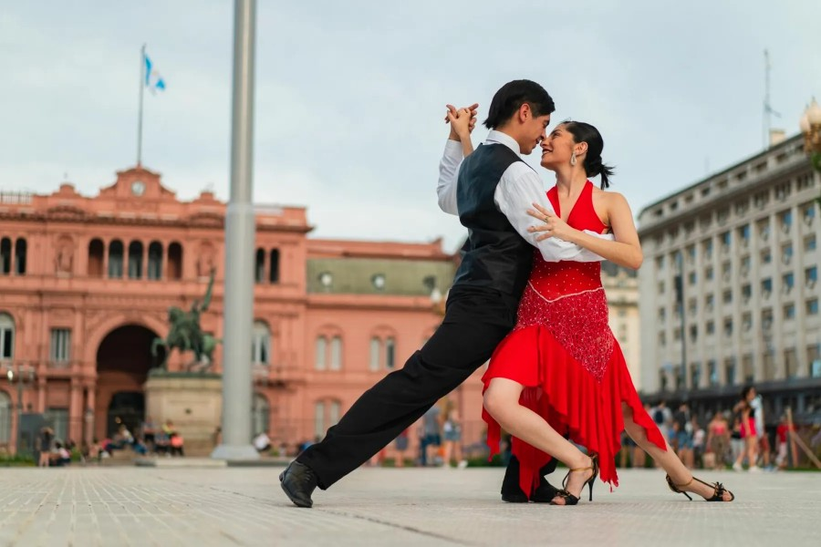
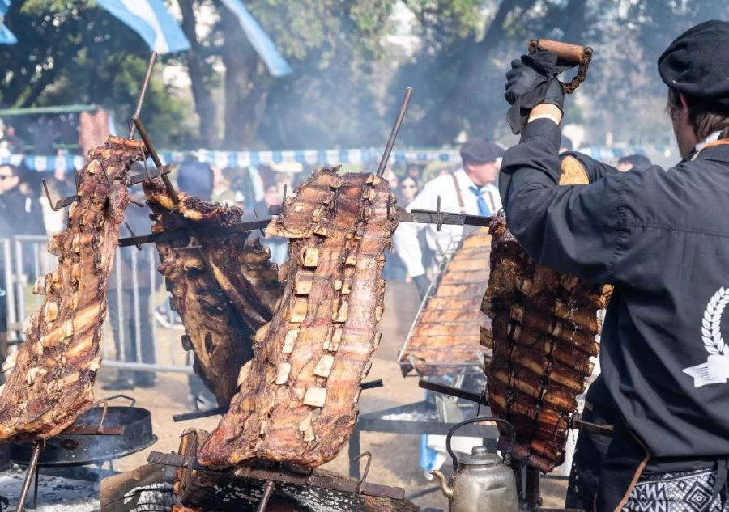
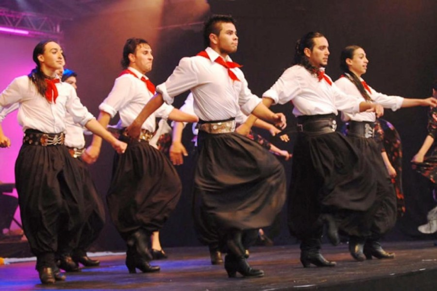

Cultura Argentina
Tradiciones, identidad y expresiones de un país diverso

El Tango: Patrimonio de la Humanidad
El tango nació a fines del siglo XIX en los barrios portuarios de Buenos Aires y Montevideo, fruto del
encuentro de inmigrantes europeos, esclavos africanos y gauchos criollos. En sus orígenes fue marginal:
se bailaba en corrales, burdeles y patios de conventillos, y fue rechazado por las clases altas porteñas
que lo consideraban vulgar.
La "Guardia Vieja" (1880-1920) estableció las bases musicales con bandoneón, violín, piano y contrabajo.
La "Guardia Nueva" (1920-1955) elevó el tango a expresión artística sofisticada con compositores como
Carlos Gardel, Aníbal Troilo y Astor Piazzolla. En 2009, la UNESCO declaró el tango Patrimonio Cultural
Inmaterial de la Humanidad.
"El tango es un pensamiento triste que se baila."
— Enrique Santos Discépolo, compositor argentino
Características y Códigos
- La milonga: Espacio social donde se baila tango. Existen códigos no escritos: la
mirada ("cabeceo") reemplaza a la palabra para invitar a bailar, el abrazo es cerrado, y la pista se
recorre en líneas circulares.
- El bandoneón: Instrumento de origen alemán (similar al acordeón) que se convirtió
en el alma del tango. Su sonido melancólico define la identidad del género.
- La letra: El lunfardo (jerga porteña) y temas de desamor, barrios y nostalgia son
centrales. Letristas como Homero Manzi y Enrique Santos Discépolo crearon poesía urbana.
- El tango electrónico: Desde los años 2000, proyectos como Bajofondo y Gotan Project
fusionaron el tango con música electrónica, alcanzando audiencias globales.
Hoy, Buenos Aires cuenta con más de 100 milongas activas. Barrios como San Telmo, La Boca y Boedo son
cuna de orquestas típicas. El Mundial de Tango, organizado anualmente por el Gobierno de la Ciudad,
reúne a bailarines de 40 países.

Gastronomía: Raíces Criollas e Inmigratorias
La cocina argentina es un mosaico de tradiciones indígenas, criollas e inmigratorias. La llegada de
millones de europeos (italianos, españoles, alemanes, vascos, árabes, judíos) entre 1850 y 1950
transformó radicalmente los hábitos alimentarios, fusionándose con las costumbres gauchas y nativas.
El asado no es simplemente una comida: es un ritual social que puede durar de 4 a 8 horas. El "asador" o
"parrillero" es una figura respetada que domina el fuego con precisión. Las carnes más valoradas son el
vacío (flank steak), la entraña (skirt steak), el bife de chorizo (sirloin) y el costillar (ribs). La
parrilla a leña o carbón de quebracho es el método tradicional.
Platos Emblemáticos
- Empanadas: De origen español, cada región tiene su versión: salteñas (picantes, con
patita), tucumanas (con cebolla y huevo duro), jujeñas (con ají y papa), mendocinas (con aceituna y
huevo), santiagueñas (dulces de queso y cebolla).
- Milanesa: Adaptación del Wiener Schnitzel austríaco. Se sirve "a la napolitana"
(con salsa de tomate, jamón y queso gratinado), inventada en Buenos Aires en los años 40.
- Locro: Guiso de origen prehispánico a base de maíz blanco, zapallo, porotos,
cebolla, ajo y carne de cerdo o vaca. Plato nacional del 25 de mayo (Día de la Patria).
- Dulce de leche: Inventado localmente en el siglo XIX (según la leyenda, por
accidente en una estancia de Cañuelas). Es el ingrediente estrella de alfajores, facturas y postres.
- Helado artesanal: La tradición italiana del gelato se adaptó al gusto local. Buenos
Aires tiene más heladerías per cápita que cualquier ciudad del mundo excepto Italia.
La escena gastronómica contemporánea incluye restaurantes de autor reconocidos internacionalmente, como
Don Julio (Buenos Aires), que figura entre los 50 mejores del mundo. La cocina de autor fusiona técnicas
francesas con ingredientes nativos como el merkén, la quinoa, la carne de llama y los hongos de la
Patagonia.
El Mate: Rito de Hospitalidad
El mate es una infusión preparada con hojas de yerba mate (Ilex paraguariensis), planta nativa de la
cuenca del Alto Paraná. Su consumo data de tiempos prehispánicos: los guaraníes lo llamaban "ka'a he'ẽ"
(agua de hierba) y lo utilizaban en ceremonias religiosas y médicas. Los jesuitas del siglo XVII fueron
los primeros en cultivarlo sistemáticamente.
La práctica del mate compartido es un acto de confianza e igualdad. La ronda se sienta en círculo, y el
"cebador" (quien prepara y sirve) es una figura de responsabilidad. Las reglas tácitas incluyen: no
decir "gracias" hasta que no se quiere más (pues implica dejar de tomar), no mover la bombilla (pues
tapa el filtro), y aceptar que el mate amargo es el auténtico.
Elementos y Variantes
- El mate (recipiente): Tradicionalmente de calabaza seca ("porongo") con borde de
plata o alpaca. También existen de madera, vidrio, silicona y cerámica.
- La bombilla: Pajita metálica con filtro en la base, generalmente de alpaca, plata o
acero inoxidable. Su diseño evolucionó desde cañas de tacuara.
- El termo: Inventado en 1892 por el británico James Dewar, se popularizó en
Argentina en la década de 1920. Es inseparable del mate en la vida cotidiana.
- Mate dulce vs. amargo: El debate nacional. El mate dulce se endulza con azúcar,
miel o stevia. El amargo es el preferido por tradición, especialmente en el Litoral y Cuyo.
- Tereré: Variante fría con agua helada o jugos, popular en el Litoral y Paraguay
durante el verano.
"El mate es lo único que no se puede comprar con plata. Se pide con confianza, se toma en compañía, y se
devuelve con gratitud."
— Julio Cortázar, escritor argentino
Argentina es el mayor consumidor per cápita de yerba mate del mundo: cada argentino consume
aproximadamente 6,5 kg anuales. La yerba mate contiene mateína (análogo de la cafeína), polifenoles
antioxidantes y vitaminas del complejo B. Estudios científicos recientes han validado propiedades
cardioprotectoras y digestivas.

Tradiciones Regionales: Diversidad Cultural
Argentina es un país federal donde cada región preserva identidades distintivas forjadas por geografía,
historia y etnias. Desde el gaucho de la pampa hasta el coplero del norte, las tradiciones regionales
son patrimonio vivo.
La Tradición Gaucha
El gaucho es el símbolo nacional de Argentina, Uruguay y el sur de Brasil. Surge en el siglo XVII como
jinete nómada de la pampa, dueño de su caballo y su lazo. La literatura gauchesca —desde el "Martín
Fierro" de José Hernández hasta la obra de Ricardo Güiraldes— elevó esta figura a mito nacional.
- Payada: Duelo poético improvisado al son de la guitarra. Los payadores compiten en
versos octosílabos rimados sobre temas propuestos por el público.
- Jineteada: Deporte tradicional donde el jinete debe mantenerse sobre un potro sin
montura ni frenos por 6 a 15 segundos. Es parte de las fiestas patronales en toda la región
pampeana.
- Boleadoras: Arma de caza gaucha compuesta por tres bolas de piedra o plomo unidas
por tientos de cuero. Hoy se usa en danzas folclóricas.
Cultura Andina del NOA
En el noroeste, las tradiciones diaguitas, atacameñas y quechuas perviven en la cosmovisión andina. La
Pachamama (Madre Tierra) es celebrada en agosto con ofrendas de comida, bebida y hojas de coca. El
carnaval en la Quebrada de Humahuaca incluye "diablos" que bailan al son de erkes, anatas y cajas,
representando la fertilidad de la tierra.
- Carnaval del Norte: En Jujuy, Salta y Catamarca, el carnaval tiene raíces
prehispánicas. Las comparsas de diablos bailan durante 9 días, culminando en el "entierro del
diablo".
- Artesanía textil: Los tejidos en telar horizontal ("telar de cintura") producen
ponchos, aguayos y chullos con motivos geométricos de significado ritual. La lana de llama, alpaca y
oveja es teñida con tintes naturales de cochinilla, nogal y ch'illka.
- Música andina: Instrumentos como la quena, el siku, el charango y el bombo legüero
acompañan festividades y rituales. Los grupos folclóricos del NOA son reconocidos
internacionalmente.
Folclore y Música Nacional
La música folclórica argentina abarca ritmos como el chacarera, zamba, gato, escondido, malambo y
chamamé. La "Ley de Música Argentina" (2015) establece que el 30% de la música difundida en medios debe
ser de autores argentinos, incluyendo folclore.
La zamba (no confundir con la samba brasileña) es el ritmo nacional por excelencia. Se baila en pareja
con pañuelo, con movimientos lentos y cadenciosos. La chacarera, originaria de Santiago del Estero, es
más rápida y se baila en grupos de cuatro. El chamamé, del Litoral, tiene influencia guaraní y se baila
pegado.
El Festival Nacional de Folclore de Cosquín (Córdoba), realizado desde 1961, es el evento folclórico más
importante de Latinoamérica. Durante 9 noches de enero, el Anfiteatro de la Plaza Próspero Molina recibe
a 150.000 espectadores por noche.